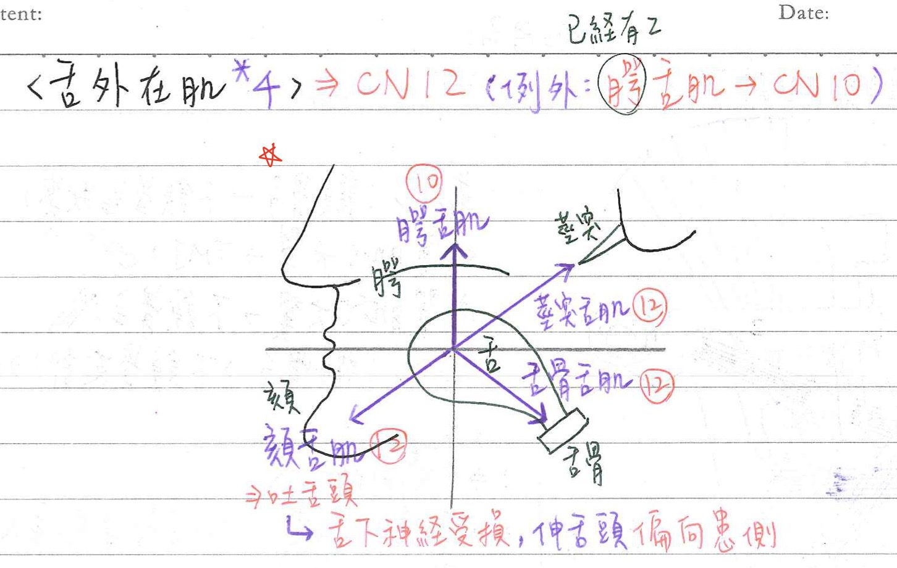

👅 肌肉系統：舌部肌肉
舌部肌肉(外在肌)：4條
| 肌肉 | 神經支配 | 運動 | 備註 |
|---|---|---|---|
| ★★★★★★頦舌肌(genioglossus m.) | 舌下N(CN12) | 舌向前、向下、向對側 | 伸舌(吐舌頭) |
| 顎舌肌(palatoglossus m.) | ★★迷走N(CN10)-咽神經叢 | 舌向上 | 副N之顱根(cranial root)，轉經迷走N |
| 莖突舌肌(styloglossus m.) | ★舌下N(CN12) | 舌向後、向上 | |
| 舌骨舌肌(hyoglossus m.) | 舌下N(CN12) | 舌向後、向下 |
- 舌外在肌之神經支配：多由舌下N(CN12)支配。例外：★★顎舌肌—>迷走N(CN10)
- ★舌下神經受損時： 伸舌時舌頭偏向患側(右側舌下N受損—>伸舌偏向右側，因為頦舌肌無力把舌頭伸向對側)
- 舌外在肌的運動：
- ★前凸(protusion)：頦舌肌
- 後收(styloglossus)：莖突舌肌、舌骨舌肌
- 下壓(depression)：頦舌肌、舌骨舌肌
- 上提(elevation)+後收(retraction)：莖突舌肌、顎舌肌
舌部肌肉(內在肌)：4條
| 肌肉 | 神經支配 | 動作 |
|---|---|---|
| 上縱肌(superior longitudinal m.) | 舌下N(CN12) | 縮短舌長，捲曲舌尖 |
| 下縱肌(inferior longitudinal m.) | 舌下N(CN12) | 縮短舌長，攤開舌尖 |
| ★橫肌(transverse m.) | 舌下N(CN12) | 窄縮舌寬，加長舌長 |
| 垂直肌(vertical m.) | 舌下N(CN12) | 加寬舌寬 |
- 舌內在肌應該不是重點(區段跟趙都沒教)
- 到目前為止只有106年考過一題，但也算是直覺題

📖 書本補充：與筆記不同或筆記沒寫到的地方
⚠️
以下為對照書本後整理，筆記原文未更動。標「筆記 vs 書」的是兩邊寫法不同、建議回頭確認的地方。
舌外在肌的作用（p.536–537）
- 書寫的作用：腭舌肌＝提高舌頭的後面；莖突舌肌＝收回舌頭；舌骨舌肌＝下壓舌頭。
- 頦舌肌（書）：兩邊一起收縮＝下壓；後面纖維＝前吐；前面纖維＝收回舌頭。筆記沒寫頦舌肌前纖維能把舌頭往回拉。
- 書的提示：頦舌肌是唯一可讓舌頭前吐的肌肉。
神經支配（p.510、p.536）
- 書的分法：腭舌肌＝迷走（SVE）；腭舌肌以外的所有舌內在肌與外在肌＝舌下神經。與筆記一致。
- 副神經的顱根加入迷走神經（p.510），與筆記「副N之顱根，轉經迷走N」一致。
- 舌下神經出顱經舌下神經管，從橄欖和錐體之間發出；另有 C1 纖維搭著它走，去支配頦舌骨肌和甲狀舌骨肌。
- 舌頭的感覺／味覺（書的表格）：前 2/3 一般感覺＝舌神經、味覺＝鼓索；後 1/3 一般感覺與味覺＝舌咽；舌根及會厭處味覺＝迷走。
舌內在肌（p.537）
- 書只分縱走、橫走、垂直走向三類，收縮時分別讓舌頭縮短、變窄、變薄。
- 筆記 vs 書：垂直肌，筆記寫「加寬舌寬」；書寫的是讓舌頭變薄（106-2-4 解析：垂直肌使舌頭變薄，橫肌使舌頭左右變窄）。兩者是同一件事的不同說法，考題用的是「變薄／變窄」。
舌骨舌肌旁的走向（p.537）
- 舌神經和舌下神經走在舌骨舌肌的淺層；舌咽神經和舌動脈走在其深層（112-1-13）。
舌的血液供應（p.536）
- 舌動脈：舌深A→舌頭前部；舌背A→舌頭後部；舌下A→舌下腺。靜脈：舌背、舌深、舌下靜脈，舌背靜脈與舌動脈伴行。
舌頭的發育（p.539）
- 舌頭由前 4 對咽弓共同發育而來：
- 第一對：正中舌芽、遠端（外側）舌膨大→前 2/3 黏膜
- 第二對：聯體（copula），之後被其他構造覆蓋
- 第三對：咽下隆起的腹側部→後 1/3 大部分黏膜（112-1-33）
- 第四對：咽下隆起的背側部→舌頭背側一小部分（迷走神經的喉上支）
📝 書中歷屆考題（點選答案作答）
101-2-5p.538
病患舌頭吐出時，偏向左方，下列何者最可能受傷？
💡 舌下神經受傷，舌頭吐出會偏向損傷側。
103-2-8p.538
下列何者的收縮與舌頭向前突出最為有關？
106-2-4p.538
下列何者收縮，可使舌頭變窄？
💡 內在肌可改變舌頭形狀：垂直肌使舌頭變薄，橫肌使舌頭左右變窄。
112-1-13p.538
下列何者走在舌骨舌肌 (hyoglossus muscle) 的外表面，向前進入下頷舌骨肌 (mylohyoid muscle) 的深層？
💡 舌動脈、舌咽神經走在舌骨舌肌深層及後面；上喉神經在舌骨下方。
110-2-18p.511
下列何者不是由舌下神經 (hypoglossal nerve) 支配？
105-2-9p.511
3 條附著在莖突 (styloid process) 上的肌肉，受下列六條神經中的那些支配？① CN V3 ② CN VII ③ CN IX ④ CN X ⑤ CN XI ⑥ CN XII
💡 莖突舌骨肌－顏面N、莖突舌肌－舌下N、莖突咽肌－舌咽N。
112-1-33p.539
下列何者為舌頭咽喉部 (pharyngeal part of tongue) 的胚胎起源？
💡 咽下隆起由第 3 對咽弓發育而來，之後成為舌頭後 1/3（咽喉部）。
111-2-42p.541
下列有關舌輪廓乳突 (circumvallate papillae) 的敘述，何者正確？
💡 輪廓乳突在終溝前方，只有 8–12 個，表面是複層扁平上皮。